Степень с целым показателем — это степень, показателем которой является любое целое число.
В прошлом уроке мы изучили степень с натуральным показателем. Этот вид степени тоже является степенью с целым показателем, поскольку натуральные числа относятся к целым числам.
Также, мы рассмотрели степень, показателем которой является 0. Этот вид степени тоже является степенью с целым показателем, поскольку 0 относится к целым числам.
Рассмотрим ещё один вид степени с целым показателем, а именно показателем которой является целое отрицательное число. Выглядят эти степени так:
2−2, 10−7, a−8
В дальнейшем любую степень с натуральным, нулевым или целым отрицательным показателем, мы будем называть степенью с целым показателем.
Предварительные навыки Содержание урока- Правило вычисления
- Тождественные преобразования
- Поднятие степени из знаменателя в числитель и наоборот
- Возведение числа 10 в целую отрицательную степень
- Представление чисел 0,1, 0,01, 0,001 в виде степени с основанием 10
- Стандартный вид числа
- Задания для самостоятельного решения
Правило вычисления
Рассмотрим следующую последовательность степеней:
20, 21, 22, 23, 24, 25
Первая степень в этой последовательности это степень 20. Предыдущая степень с целым показателем будет уже с отрицательным показателем и выглядеть как 2−1.
2−1, 20, 21, 22, 23, 24, 25
А предыдущая степень с целым показателем, которая располагается до 2−1, будет степень 2−2
2−2, 2−1, 20, 21, 22, 23, 24, 25
Продолжим эту последовательность в сторону степеней с целыми отрицательными показателями:
2−5, 2−4, 2−3, 2−2, 2−1, 20, 21, 22, 23, 24, 25
Теперь попробуем вычислить эти степени. Степени с натуральными показателями и степень, показателем которой является 0, вычисляются легко:
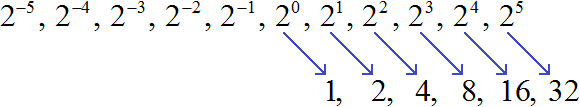
А как вычислить степени с отрицательными показателями? Для начала немного отойдём от темы и затронем несколько закономерностей.
В отрицательную степень число возводится немного иначе. Следует понимать, что если при возведении в положительную степень число увеличивается, то при возведении в отрицательную степень это число наоборот уменьшается.
Если мы возьмём какое-нибудь число n, и начнём последовательно увеличивать его степень, то получим последовательность чисел, в которой каждое число меньше следующего в n раз.
Например, возьмём число 2. Начиная с нуля будем последовательно увеличивать его показатель:
20, 21, 22, 23, 24, 25
Вычислим эти степени:
1, 2, 4, 8, 16, 32
Получили последовательность чисел, в которой каждое число меньше следующего числа в 2 раза. Тогда логично предположить, что число, располагающееся до единицы, будет в два раза меньше единицы. Его можно получить, если 1 разделить на 2
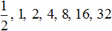
Вернёмся к нашей исходной последовательности, где мы вычисляли степени. Получается, что степень 2−1 мы вычислили. Она равна рациональному числу \(\frac{1}{2}\)
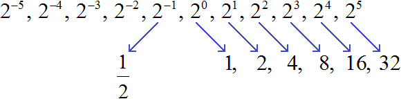
Предыдущее за числом \(\frac{1}{2}\) должно быть в два раза меньше, чем \(\frac{1}{2}\). Чтобы его получить разделим \(\frac{1}{2}\) на 2

Получили \(\frac{1}{4}\). Это значение степени 2−2
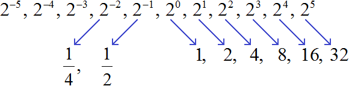
Продолжая деление на 2 можно получить значения остальных степеней с целыми отрицательными показателями:
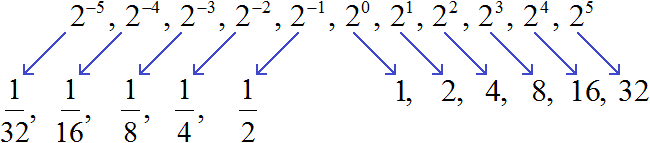
Заметим, что в данной последовательности значения степеней с отрицательными показателями являются обратными числами к значениям степеней с натуральными показателями:
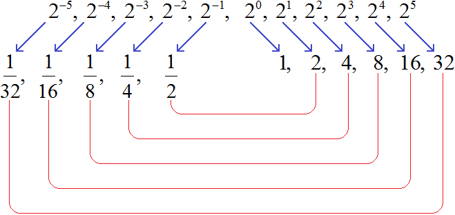
К примеру, значение степени в 22 есть число 4. А значение степени 2−2 есть число \(\frac{1}{4}\). Числа 4 и \(\frac{1}{4}\) являются обратными друг другу. А степени 22 и 2−2 отличаются только тем, что у них противоположные показатели.
Можно сделать вывод, что для вычисления степени с отрицательным показателем, нужно записать дробь, в числителе которой единица, а в знаменателе та же самая степень, но с противоположным показателем. Покажем это на примере степени 2−2
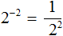
Вычислим степень, находящуюся в знаменателе:
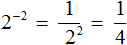
Таким образом, чтобы вычислить степень вида a−n можно воспользоваться следующим правилом:
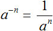
Данное правило можно доказать, используя правило деления степеней с одинаковыми основаниями. Допустим, потребовалось вычислить выражение 23 : 25. Запишем это деление в виде дроби
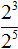
Воспользуемся правилом деления степеней с одинаковыми основаниями:
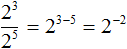
Получили степень с отрицательным показателем 2−2. Ранее мы выяснили, что её значение равно \(\frac{1}{4}\). Чтобы убедиться в этом, попробуем вычислить выражение как обычно, не используя правило деления степеней:
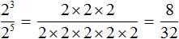
Получили рациональное число
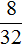
. Сократим его на 8. Тогда получим \(\frac{1}{4}\)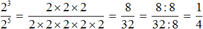
Пример 2. Найти значение выражения 9−2
Воспользуемся правилом вычисления степени с целым отрицательным показателем:
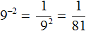
Пример 3. Найти значение выражения 3−3
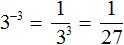
Следует упомянуть, что правило
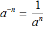
работает только тогда, когда a ≠ 0.Действительно, если a будет равным нулю, то в знаменателе получим 0, а на нуль делить нельзя.
Пример 4. Найти значение выражения
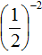
Пример 5. Найти значение выражения
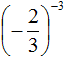
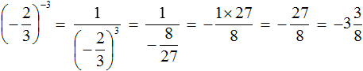
При возведении обыкновенных дробей в отрицательную степень, можно пользоваться формулой
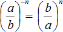
. Решим предыдущие два примера с помощью этой формулы: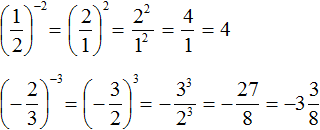
Желательно уметь возводить обыкновенную дробь в отрицательную степень как с помощью формулы, так и без неё.
Тождественные преобразования
Все тождественные преобразования, которые мы рассматривали при изучении степени с натуральным показателем, сохраняются и для степеней с целыми отрицательными показателями.
Например, чтобы представить выражение 2−1 × 2−3 в виде степени, можно воспользоваться основным свойством степени:
2−1 × 2−3 = 2−1 + (−3) = 2−4
Пример 2. Найти значение выражения 5−15 × 516
Воспользуемся основным свойством степени:
5−15 × 516 = 5−15 + 16 = 51 = 5
или:
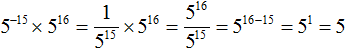
Видим, что первый вариант решения намного проще и удобнее.
Пример 3. Найти значение выражения (10−4)−1
Воспользуемся правилом возведения степени в степень:
(10−4)−1 = 10−4 × (−1) = 104 = 10000
Пример 4. Найти значение выражения
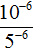
Представим число основание 10 в виде произведения 2 × 5. Тогда числитель примет вид (2 × 5)−6
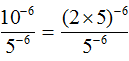
В числителе применим правило возведения в степень произведения:
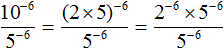
Сократим получившуюся дробь на 5−6
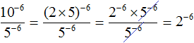
Вычислим степень 2−6
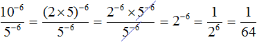
Поднятие степени из знаменателя в числитель и наоборот
Если знаменатель дробного выражения содержит степень, то данную степень можно поднять в числитель, изменив знак показателя этой степени на противоположный. Значение выражения при этом не меняется. Данное преобразование иногда используется при упрощении выражений.
Рассмотрим следующее равенство:
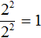
Данное равенство является верным, поскольку выражение
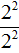
равно 20, а любое число в нулевой степени есть единица.Попробуем поднять степень 22 из знаменателя в числитель, изменив знак показателя этой степени на противоположный. При этом, поднятую степень и ту степень, которая располагалась в числителе, соединим знаком умножения:
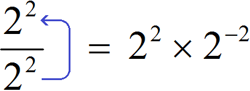
Получили выражение 22 × 2−2. Чтобы его вычислить, воспользуемся основным свойством степени:
22 × 2−2 = 22 + (−2) = 20 = 1
Получился тот же результат, что и раньше. Значит значение выражения не изменилось. Как это работает?
Если в равенстве поменять местами левую и правую часть, то получим равенство
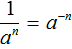
. Это позволяет заменять в выражениях дробь вида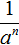
на тождественно равное ей выражение a−n.Теперь представим выражение в виде произведения
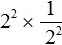
. То есть заменим деление умножением. Напомним, что при замене деления умножением, делимое умножают на число, обратное делителю. А обратное делителю число в данном случае это дробь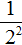
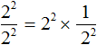
Теперь воспользуемся правилом . В произведении заменим дробь на тождественно равное ей выражение 2−2
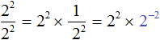
Далее, как и раньше применяем основное свойство степени:
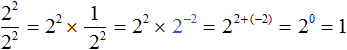
Получился тот же результат 1.
Таким же образом можно опустить степень из числителя в знаменатель, изменив знак показателя этой степени на противоположный.
Рассмотрим выражение
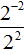
. Чтобы найти его значение, воспользуемся правилом деления степеней с одинаковыми основаниями. В результате получим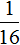
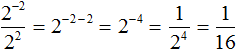
Теперь попробуем решить этот пример, опустив степень 2−2 из числителя в знаменатель, изменив знак показателя этой степени на противоположный. При этом, опущенную степень 2−2 и ту степень, которая располагалась в знаменателе, соединим знаком умножения. А в числителе останется единица:
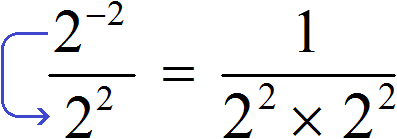
Дальнейшее вычисление не составит особого труда:
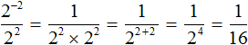
Как и в прошлом примере выражение представимо в виде произведения
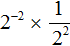
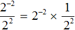
Этим и объясняется появление единицы в числителе, после того как степень 2−2 была опущена в знаменатель.
Переносимых в знаменатель либо в числитель степеней может быть несколько. Например, знаменатель дроби
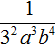
содержит степени 32, a3, b4. Перенесём эти степени в числитель, изменив знаки их показателей на противоположные. В результате получим выражение 3−2a−3b−4.Пример 2. Поднять степени из знаменателя дроби
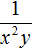
в числитель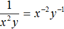
Пример 3. Поднять степени из знаменателя дроби
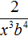
в числительПример 4. Поднять степень из знаменателя дроби в числитель
Пример 5. Опустить степень из числителя дроби в знаменатель
Пример 6. Степень из числителя дроби опустить в знаменатель, а степень из знаменателя поднять в числитель
Представлять дробь в виде произведения вовсе не обязательно. Если пропустить эту запись, то данный пример можно решить короче:
Пример 7. В дроби перенести из знаменателя в числитель только те степени, которые имеют отрицательные показатели:
Пример 8. Представить произведение 3x−5 в виде дроби, не содержащей степени с отрицательным показателем.
Перепишем произведение 3x−5 с помощью знака умножения:
3 × x−5
Сомножитель 3 оставим без изменений, а сомножитель x−5 заменим на тождественно равную ему дробь
Теперь согласно правилу умножения целого числа на дробь, умножим множитель 3 на числитель дроби . В результате образуется дробь
Пример 9. Представить произведение 3(x + y)−4 в виде дроби, не содержащей степени с отрицательным показателем.
Выражение состоит из сомножителей 3 и (x + y)−4. Сомножитель 3 оставим без изменений, а сомножитель (x + y)−4 заменим на тождественно равную ему дробь
Теперь умножим множитель 3 на числитель дроби . В результате образуется дробь
Пример 10. Представить дробь в виде произведения.
Чтобы решить этот пример, достаточно поднять степень x2 в числитель, изменив знак показателя этой степени на противоположный:
Как и в прошлых примерах дробь можно было представить в виде произведения . Затем воспользовавшись правилом , заменить сомножитель на тождественно равный ему сомножитель x−2.
Пример 11. Представить дробь в виде произведения.
Пример 12. Найти значение выражения
Поднимем степень 2−3 из знаменателя в числитель, а степень 10−2 из числителя опустим в знаменатель:
Вычислим значения степеней, содержащихся в числителе и в знаменателе:
Сократим полученную дробь на 25. Тогда останется дробь \(\frac{8}{4}\), значение которой равно 2.
А если бы мы не подняли степень 2−3 в числитель, и степень 10−2 не опустили в знаменатель, а стали вычислять каждую степень по отдельности, то получили бы не очень компактное решение:
Возведение числа 10 в целую отрицательную степень
Число 10 в отрицательную степень возводится таким же образом, как и другие числа. Например:
Замечаем, что количество нулей, которые получаются в ответе равны модулю показателя исходной степени. Например, в степени 10−2 модуль показателя равен 2. Это значит, что в ответе будет содержаться два нуля. Так оно и есть:
Чтобы возвести число 10 в отрицательную степень, нужно перед единицей записать количество нулей, равное модулю показателя исходной степени.
При этом после первого нуля следует поставить запятую. Примеры:
Представление чисел 0,1, 0,01, 0,001 в виде степени с основанием 10
Чтобы представить числа 0,1, 0,01, 0,001 в виде степени с основанием 10, нужно записать основание 10, и в качестве показателя указать отрицательный показатель, модуль которого равен количеству нулей исходного числа.
Представим число 0,1 в виде степени с основанием 10. Видим, что в числе 0,1 один нуль. Значит, число 0,1 в виде степени с основанием 10 будет представлено как 10−1. Показатель степени 10−1 равен −1. Модуль этого показателя равен количеству нулей в числе 0,1
0,1 = 10−1
Число 0,1 это результат деления , а эта дробь есть значение степени 10−1.
Пример 2. Представить число 0,01 в виде степени с основанием 10.
В числе 0,01 два нуля. Значит, число 0,01 в виде степени с основанием 10 будет представлено как 10−2. Показатель степени 10−2 равен −2. Модуль этого показателя равен количеству нулей в числе 0,01
0,01 = 10−2
Число 0,01 это результат деления , то есть , а эта дробь есть значение степени 10−2.
Пример 3. Представить число 0,001 в виде степени с основанием 10.
0,001 = 10−3
Пример 4. Представить число 0,0001 в виде степени с основанием 10.
0,0001 = 10−4
Пример 5. Представить число 0,00001 в виде степени с основанием 10.
0,00001 = 10−5
Стандартный вид числа
Запишем число 2 000 000 в виде произведения числа 2 и 1 000 000
\[2 \times 1 000 000\]
Сомножитель 1 000 000 можно заменить на степень 106
2 × 106
Такой вид записи называют стандартным видом числа. Стандартный вид числа позволяет записывать в компактном виде как большие, так и маленькие числа.
Например, маленькое число 0,005 можно записать в виде произведения числа 5 и десятичной дроби 0,001.
\[5 \times 0,001\]
Десятичную дробь 0,001 можно заменить на степень с 10−3
5 × 10−3
Значит, число 0,005 в стандартном виде будет выглядеть как 5 × 10−3
0,005 = 5 × 10−3
По стандартному виду числа можно вычислить изначальное число. Так, при записи числа 2 000 000 в стандартном виде, мы получили произведение 2 × 106. Если вычислить это произведение, то снова получим 2 000 000
2 × 106 = 2 × 1 000 000 = 2 000 000
А при записи числа 0,005 в стандартном виде мы получили произведение 5 × 10−3. Если вычислить это произведение, то получим 0,005
То есть записывая число в стандартном виде нужно записывать его так, чтобы сохранить его изначальное значение.
Стандартным видом числа называют запись вида a × 10n, где 1 ≤ a < 10 и n — целое число.
Число а это исходное число, которое надо записать в стандартном виде. Оно должно удовлетворять неравенству 1 ≤ a < 10. Чаще всего исходное число надо приводить к виду, при котором неравенство 1 ≤ a < 10 становится верным.
Например, представим число 12 в стандартном виде. Для начала проверим становится ли верным неравенство 1 ≤ a < 10 при подстановке числа 12 вместо а
1 ≤ 12 < 10
Неравенство верным не становится. Чтобы сделать неравенство верным, приведём число 12 к виду, при котором оно удовлетворяло бы данному неравенству. Для этого передвинем в числе 12 запятую влево на одну цифру:
1,2
Число 12 обратилось в число 1,2. Это число будет удовлетворять неравенству 1 ≤ a < 10
1 ≤ 1,2 < 10
Теперь наша задача состоит в том, чтобы записать произведение a × 10n. С числом а мы разобрались — этим числом у нас будет 1,2. А как подобрать степень с основанием 10?
После переноса запятой на одну цифру влево, число 12 утратило своё изначальное значение. Запятая на одну цифру влево двигается тогда, когда число делят на 10. А чтобы восстановить изначальное значение числа запятую нужно передвинуть обратно в правую сторону на одну цифру, то есть умножить число 1,2 на 10.
Значит, чтобы записать число 12 в стандартном виде, нужно представить его в виде произведения 1,2 × 10¹
12 = 1,2 × 10¹
Пример 2. Записать число 0,5 в стандартном виде.
Число 0,5 не удовлетворяет неравенству 1 ≤ a< 10, поэтому передвинем запятую в этом числе на одну цифру вправо. В результате получим число 5, которое удовлетворяет неравенству 1 ≤ a< 10.
Теперь запишем произведение вида a × 10n. Число a в данном случае это 5. А степень с основанием 10 надо выбрать так, чтобы произведение a × 10n стало равным числу 0,5. Число 0,5 получится если умножить число 5 на множитель 0,1, который представим в виде степени 10−1. В результате получим следующую запись:
0,5 = 5 × 10−1
Пример 3. Записать число 652 000 в стандартном виде.
Число 652 000 не удовлетворяет неравенству 1 ≤ a< 10, поэтому передвинем запятую в этом числе на пять цифр влево. В результате получим число 6,52000 которое удовлетворяет неравенству 1 ≤ a< 10.
Теперь запишем произведение вида a × 10n. Число a в данном случае это 6,52000. А степень с основанием 10 надо выбрать так, чтобы произведение a × 10n стало равным числу 652 000. Число 652 000 получится если число 6,52000 умножить на 100 000, а это есть степень 105. В результате получим следующую запись:
652 000 = 6,52000 × 105
Нули в конце десятичной дроби 6,52000 можно отбросить. Тогда получим более компактную запись:
652 000 = 6,52 × 105
Пример 5. Записать число 1 024 000 в стандартном виде.
Число 1 024 000 не удовлетворяет неравенству 1 ≤ a< 10, поэтому передвинем запятую в этом числе на шесть цифр влево. В результате получим число 1,024000 которое удовлетворяет неравенству 1 ≤ a< 10.
Теперь запишем произведение вида a × 10n. Число a в данном случае это 1,024000 . А степень с основанием 10 надо выбрать так, чтобы произведение a × 10n было равно изначальному числу 1 024 000. Число 1 024 000 получится если число 1,024000 умножить на 1 000 000, а это есть степень 106. В результате получим следующую запись:
1 024 000 = 1,024000 × 106
Нули в конце десятичной дроби 1,024000 можно отбросить:
1 024 000 = 1,024 × 106
Отбрасывать можно только те нули, которые располагаются в конце, и после которых нет других цифр, бóльших нуля. В приведённом примере были отброшены только три нуля, а нуль располагавшийся между запятой и цифрой 2 был сохранен, несмотря на то, что он тоже располагался после запятой.
Пример 6. Записать число 0,000325 в стандартном виде.
Передвинем в данном числе запятую так, чтобы оно удовлетворяло неравенству 1 ≤ a< 10. В результате получим число 3,25
Теперь запишем произведение вида a × 10n. Число a в данном случае это 3,25. А степень с основанием 10 надо выбрать так, чтобы произведение a × 10n было равно изначальному числу 0,000325. Число 0,000325 получится если число 3,25 умножить на множитель 0,0001 который представим в виде степени 10−4. В результате получим следующую запись:
0,000325 = 3,25 × 10−4
Задания для самостоятельного решения
Показать решение
Показать решение
Показать решение
Показать решение
Показать решение
Показать решение
Показать решение
Показать решение
Показать решение
Показать решение
Показать решение
Показать решение
Показать решение
Показать решение
Показать решение
Показать решение
Показать решение
Показать решение
Показать решение
Показать решение
Показать решение
Показать решение
Показать решение
Показать решение
Показать решение
Показать решение
Показать решение
Показать решение
Показать решение
Показать решение
Показать решение
Показать решение
Показать решение
Показать решение
Показать решение
Показать решение
Показать решение
Показать решение